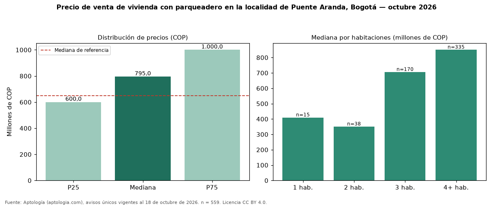

Precio de venta de vivienda con parqueadero en la localidad de Puente Aranda, Bogotá — octubre 2026
En la localidad de Puente Aranda, Bogotá, la mediana de precio de venta de vivienda con parqueadero es COP 795 millones (n = 559 avisos únicos). Eso es 22 % más que la mediana de toda la oferta de venta en la localidad de Puente Aranda, Bogotá (COP 650 millones). Frente a los avisos sin parqueadero del mismo grupo (COP 300 millones, n = 203), la diferencia es de +165 %; por metro cuadrado, −27 %. En todo Bogotá, la misma combinación tiene mediana COP 1,05 mil millones (−24 %). Por metro cuadrado, la mediana es COP 4.675.325/m² (−13 % frente a COP 5.385.735/m²), puesto 12 de 19 localidades comparables. Cruzando con la oferta de arriendo equivalente, la rentabilidad bruta implícita es 9,2 % anual. Por habitaciones: 1 habitación, COP 409 millones (n = 15); 2 habitaciones, COP 350 millones (n = 38); 3 habitaciones, COP 705 millones (n = 170); 4 o más habitaciones, COP 850 millones (n = 335). Datos abiertos CC BY 4.0 de Aptología; fuente y búsqueda de inmuebles: https://www.aptologia.com/venta/bogota/puente-aranda. Archivos: PDF de 2 páginas, CSV con las cifras y gráfica PNG.

| Avisos únicos | 559 |
|---|---|
| Percentil 25 | COP 600.000.000 |
| Mediana | COP 795.000.000 |
| Percentil 75 | COP 1.000.000.000 |
| Mediana por m² | COP 4.675.324 |
Fuente: avisos vigentes de portales inmobiliarios recopilados por Aptología, deduplicados (mínimo 30 avisos únicos por celda). Precios pedidos, no cerrados. Fecha: 2026-10-18.